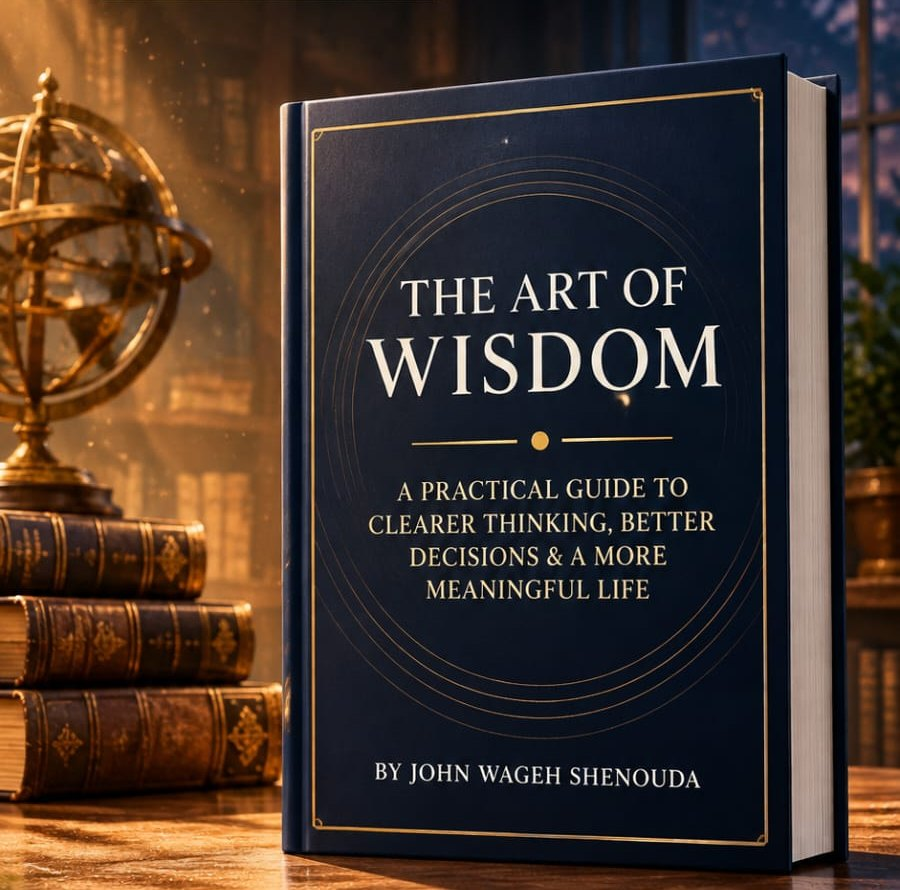

The Art of Wisdom is a practical guide to clearer thinking, better decisions and a more meaningful life. Real methods, reflection questions and a 30-day workbook.

Knowledge tells you what is known; wisdom helps you decide what matters.
Ten chapters on wisdom, judgment, habits, relationships, money, decisions and resilience.
Reflection prompts, practical decision tools and chapter exercises you can test in real life.
One small step a day to turn ideas into habits, plus a personal wisdom plan.
One chapter at a time. Mark one idea that challenges you and one action to try.
Short clips from the book. Tap to play.
John Wageh Shenouda wrote The Art of Wisdom as a realistic guide for people who want to think clearly and act well. The book does not promise a life without mistakes or loss. It offers a way to meet them with more awareness, stronger judgment and a deeper commitment to your values.
Install this page as an app. No app store needed. It opens full screen and always shows the latest version of the book page.
On iPhone: tap Share, then Add to Home Screen. On Android: open the browser menu, then Install app or Add to Home screen.
Get the digital book and the 30-day workbook. The checkout runs securely on Gumroad.
Get the book on Gumroad